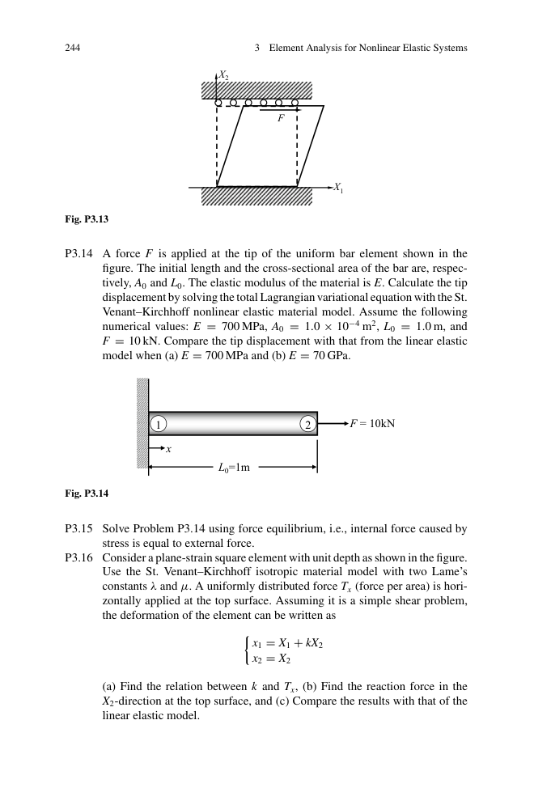
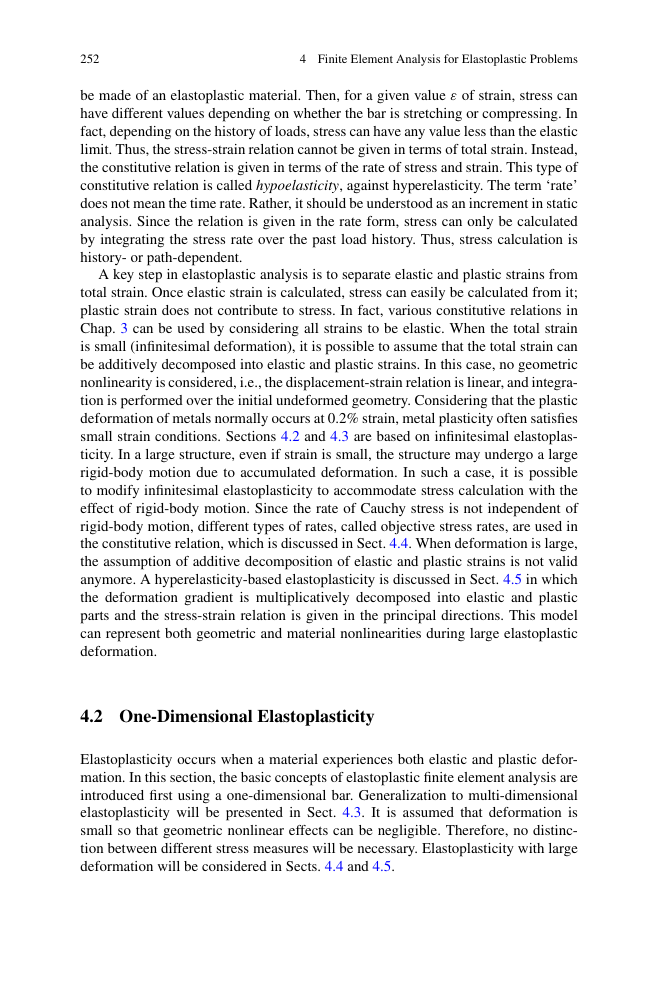
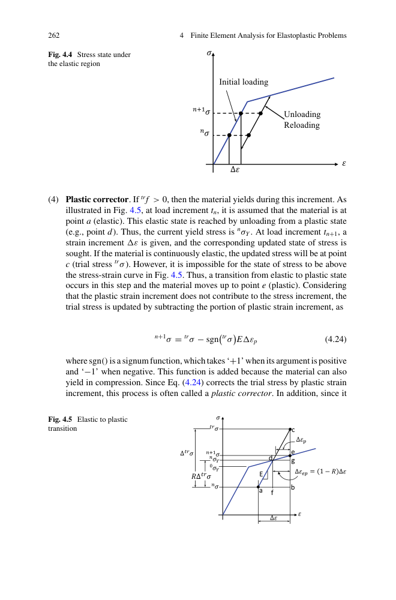
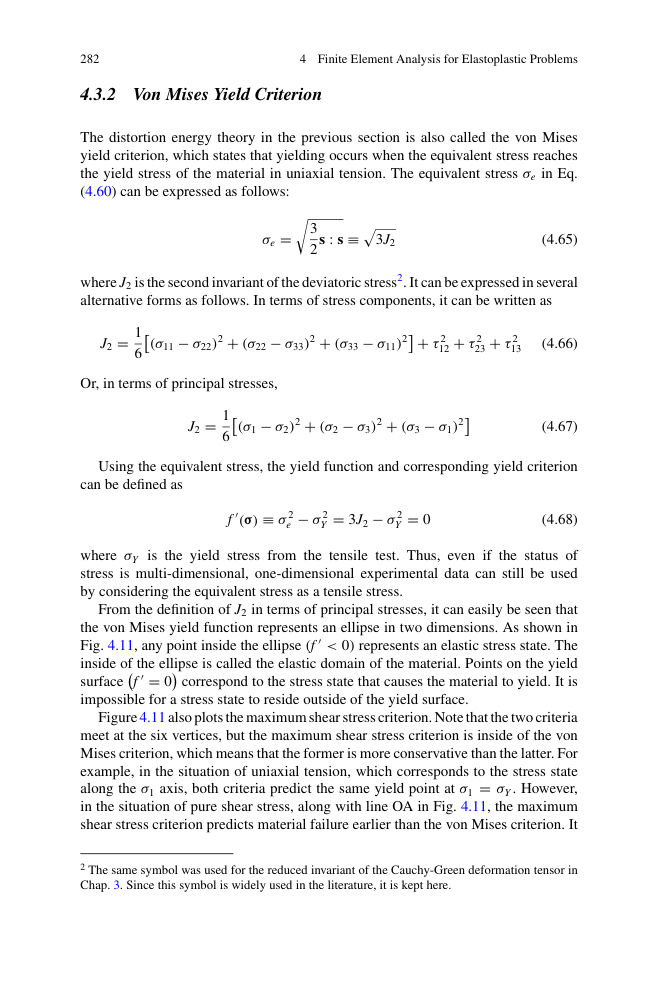
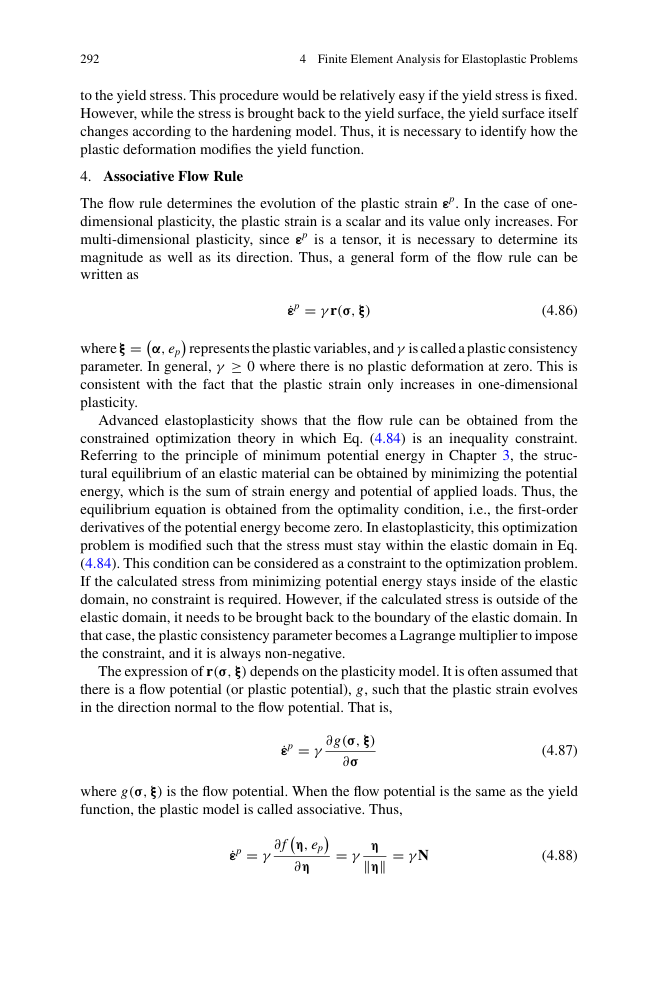
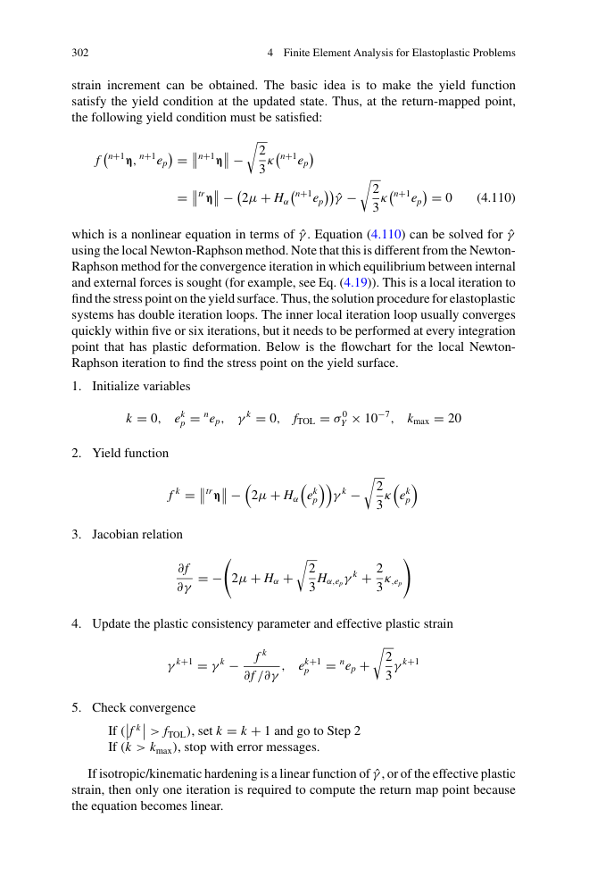
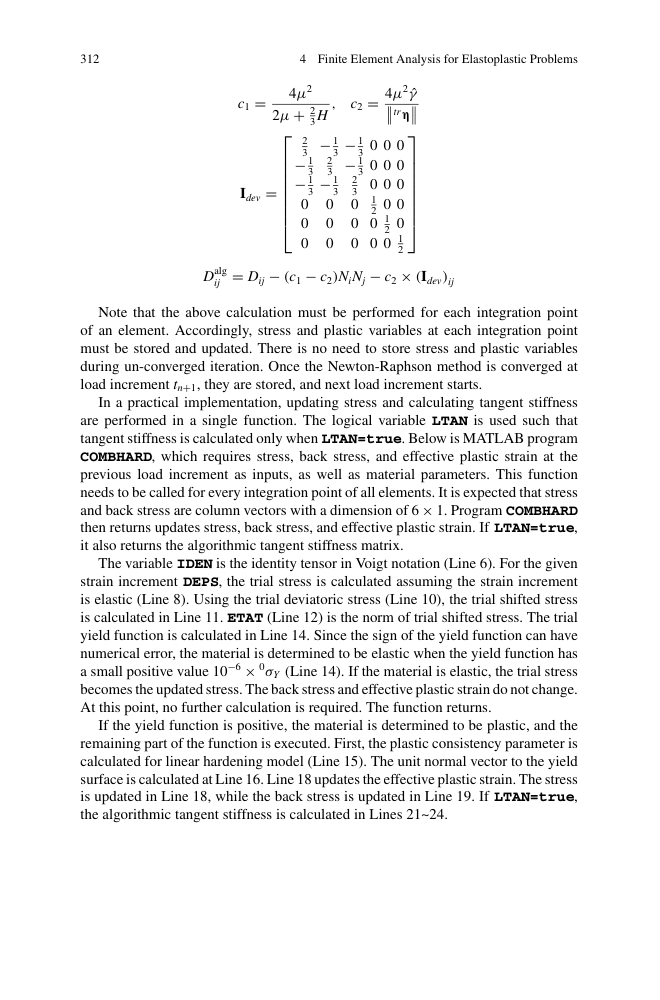
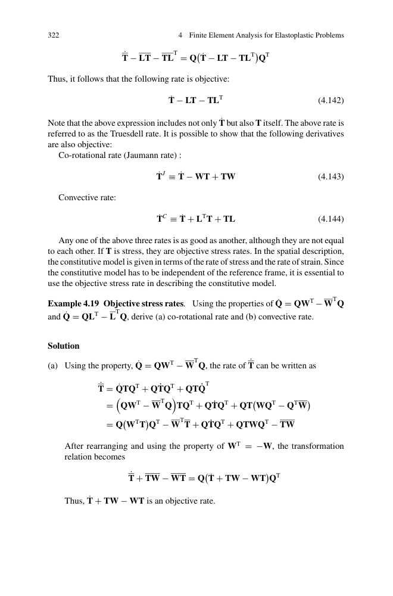
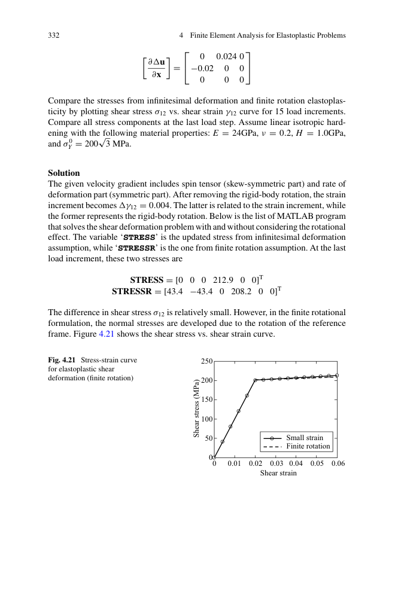
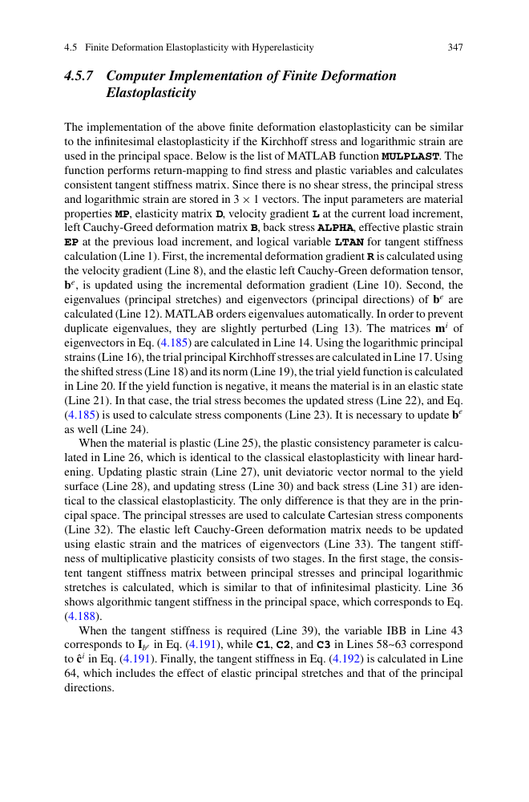

第 4 章 · 有限元分析 - 弹塑性材料
Finite Element Analysis for Elastoplastic Problems · PDF p251–372
📖 4.1 本章概览
本章讨论材料非线性中最常见也最复杂的弹塑性。核心：载荷-卸载行为不可逆，应力-应变依赖历史，需要本构积分算法逐载荷步更新。
- 4.1 引言：弹塑性与路径相关性
- 4.2 一维弹塑性：屈服 / 流动 / 硬化
- 4.3 多维弹塑性：屈服准则 / 流动法则
- 4.4 大变形弹塑性：客观应力率
- 4.5 超弹塑性：乘法分解 F = Fe · Fp
- 4.6 例子：板弯曲、压力容器
- 4.7 MATLAB 代码实现

图 4.x 弹塑性应力-应变：弹性加载→屈服→塑性流动→硬化→卸载（永久变形）
📏 4.2 一维弹塑性
4.2.1 基本概念
- 屈服：应力达到 σY 后，材料开始塑性变形（永久变形）
- 应变分解：ε = εe + εp （小变形下加法分解有效）
- 硬化：屈服面随塑性应变移动 / 膨胀
- 流动法则：dεp = dλ · ∂g/∂σ（g 是塑性势函数）

图 4.x 一维弹塑性应力-应变曲线：弹性段 + 屈服点 + 塑性段 + 卸载（弹性恢复）
4.2.2 各向同性硬化 vs 运动硬化
- 各向同性硬化：屈服面均匀膨胀（σY 增大）
- 运动硬化：屈服面平移（σY 不变，处理包辛格效应）
- 混合硬化：两者组合
4.2.3 1D 本构积分（返回映射 + 塑性校正）
- 试应力：εtr = εn + Δε；σtr = E · εtr
- 屈服判断：若 |σtr| ≤ σY，材料保持弹性（σn+1 = σtr，εn+1p = εnp）
- 塑性校正：若 |σtr| > σY，计算 Δεp = (|σtr| − σY) / (E + H)，更新 σn+1
先按弹性更新试应力，再把超出的部分"拉回"到屈服面。这是绝大多数本构积分算法的骨架。

图 4.5 返回映射算法：弹性试算 → 塑性校正 → 落到屈服面
F = 12 kN，A = 10⁻⁴ m² → σ = 120 MPa。E = 100 GPa，H = 10 GPa，σY = 100 MPa。
- ε(1)e = 100/100000 = 0.001
- Δσ = 20 MPa，Δε(2)e = 20/100000 = 0.0002
- Δε(2)p = 20/10000 = 0.002
- εe 总 = 0.0012，εp = 0.002
总应变 = 0.0032，仅 0.0012 是弹性的，其余 62.5% 是塑性。这体现"少量应力超过 σY 就会引起大量塑性变形"。
🔩 4.3 多维弹塑性
4.3.1 屈服准则
常见等效应力 σeq：
- von Mises（金属常用）：σeq = √(3/2 · s:s)，其中 s = σ − (tr σ/3) I 是偏应力张量
- Tresca（最大剪应力）：σeq = σ1 − σ3
- Drucker-Prager（岩土）：含静水压力项
- Mohr-Coulomb（岩土）：τ = c + σ·tan φ
4.3.2 Von Mises 屈服准则
J2 是偏应力张量的第二不变量。在 2D 主应力空间，von Mises 是椭圆，Tresca 是六边形。von Mises 包络 Tresca → Tresca 更保守。

图 4.11 von Mises（椭圆）vs Tresca（六边形）屈服面在 2D 主应力空间
4.3.3 硬化模型
各向同性硬化：
运动硬化（线性 Ziegler）：
4.3.4 关联流动法则
关联流动保证塑性应变沿屈服面法向。
4.3.5 一致性条件
🌐 4.4 大变形客观应力率
小变形假设下 dσ 已足够。大变形下Cauchy 应力的物质导数不满足刚体转动不变，需要客观应力率（objective stress rate）：
- Jaumann 率：σ▽J = dσ/dt − W·σ − σ·WT（用 spin 张量 W）
- Truesdell 率：σ▽T = J · d(J⁻¹σ)/dt
- Green-Naghdi 率：用 R 计算
本构：σ▽ = De : dεe

图 4.x 大变形弹塑性的客观应力率（Jaumann / Truesdell）
🌟 4.5 超弹塑性：乘法分解
小变形假设不成立时，加法分解 ε = εe + εp 失效（塑性变形很大，应变不能线性求和）。
Lee 提出的乘法分解：
Fe = 弹性部分（卸载后可恢复），Fp = 塑性部分（中间构形）。
- 应力只在弹性部分产生：σ = (1/J) · ∂We/∂Ee
- 流动法则：Lp = dFp/dt · (Fp)-1
复杂但几何+材料非线性同时处理，是大变形塑性问题的"黄金标准"。

图 4.x 乘法分解：F = Fe · Fp（Lee 1969）
💻 4.6 数值积分算法
4.6.1 本构积分
关键算法：
- 返回映射（Radial Return）：各向同性硬化
- Closest Point Projection：一般屈服面
- Cutting Plane：隐式积分
- Euler 后向 / Crisfield 等
4.6.2 切线模量
其中 n = ∂f/∂σ 是塑性流方向，H' 是硬化模量。一致切线模量保证 NR 二次收敛。

图 4.x 一致切线模量算法
4.7 MATLAB 代码（第 4.6 节）
第 4.6 节给出弹塑性 1D 杆单元 + 返回映射的 MATLAB 实现（PDF p320-340）。

图 4.x 弹塑性 1D 杆返回映射 MATLAB 代码

图 4.x 3D 弹塑性板弯曲：塑性区演化
板在弯曲时：中性层一侧拉伸屈服、另一侧压缩屈服。弯曲刚度（D）会随载荷增加而非线性退化。
典型问题：汽车车门侧面碰撞吸能（薄壁梁弯曲塑性铰）。

图 4.x 工程应用：板料冲压成形（多步弹塑性分析）
📌 4.7 本章总结
- ✅ 弹塑性是路径相关的（不可逆）
- ✅ 一维核心：返回映射（试应力 → 塑性校正）
- ✅ 多维关键：屈服准则（von Mises / Tresca / Mohr-Coulomb）+ 流动法则
- ✅ 硬化：各向同性、运动、混合
- ✅ 大变形弹塑性需客观应力率（Jaumann）
- ✅ 超弹塑性：F = Fe · Fp（最终方案）
- ✅ 工程价值：金属成形、碰撞、压力容器、焊接
第 5 章将进入边界非线性（接触）。
📝 4.8 习题（PDF p350-372）
- 4.1 一维塑性分解（总应变 ε = 0.003，求各部分）
- 4.2 加载-卸载的塑性应变计算
- 4.5 1D 杆的 NR 迭代
- 4.6 von Mises 准则（多维应力状态）
- 4.10 返回映射算法手算
- 4.15 包辛格效应（运动硬化）
- 4.20 Tresca 与 von Mises 比较
- 4.25 用 MATLAB 写弹塑性程序
{kind=link}
{kind=link}
{kind=link}
{kind=link}
{kind=link}
{kind=link}
{kind=link}
{kind=link}
{kind=link}
{kind=link}
{kind=link}